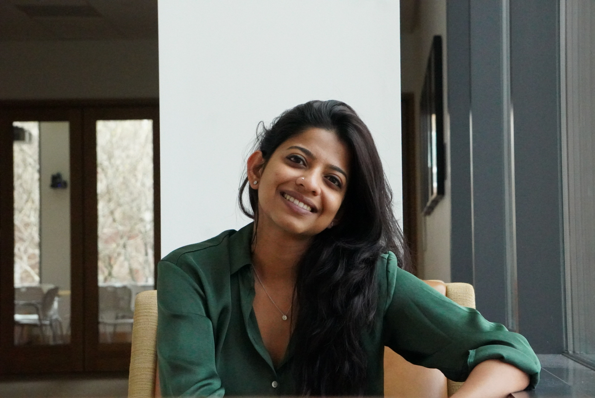
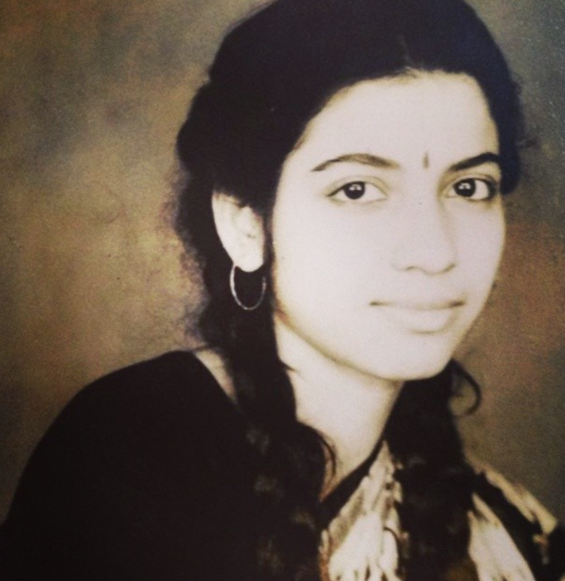
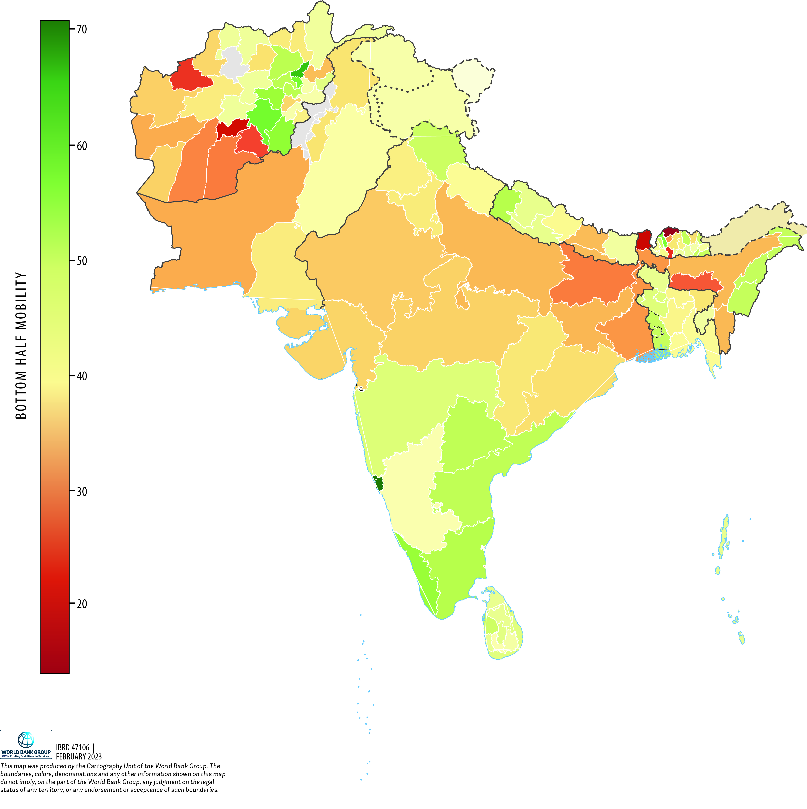
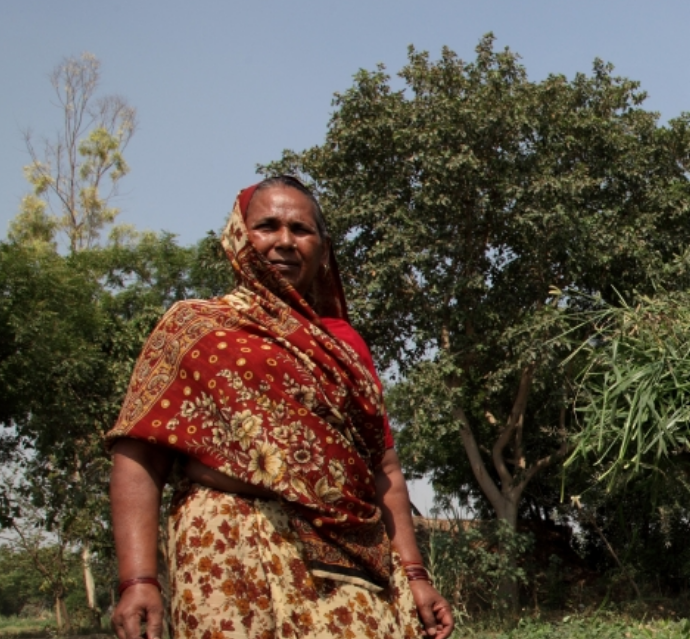
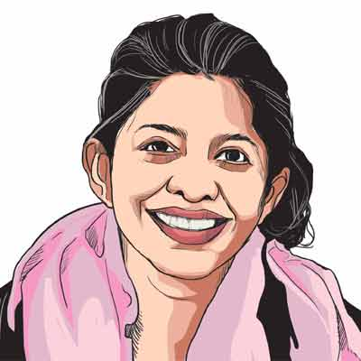

PhD Student · Harvard Kennedy School
I am a third-year PhD student in Public Policy (Economics Track) at the Harvard Kennedy School, and a PhD Scholar at the Stone Program in Inequality & Social Policy. I am currently building a research agenda on social norms and gender inequality across developing countries.
When not trying to make sense of the world through data, I can be found birding, cooking, painting, or on long (slow) runs with my husband.
Download CV



I'm always happy to hear from researchers, collaborators, or anyone curious about my work.